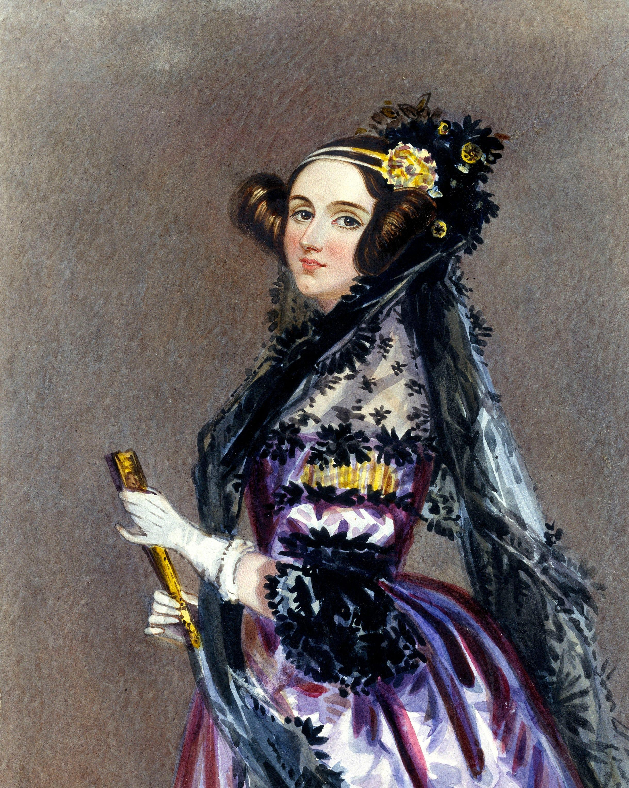
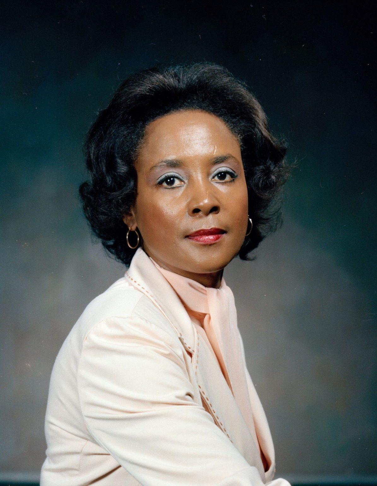

Découvrez le parcours de six femmes qui ont marqué l'histoire de l'informatique.

1815-1852
Première programmeuse
1906-1992
Inventrice du compilateur
1936-
Programmeuse et ingénieure logicielle
1918-2020
Mathématicienne et astronome
1914-2000
Innovation en communications

1933-2011
Informaticienne et mathématicienne